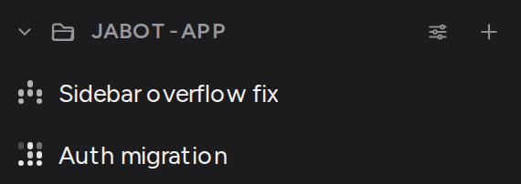
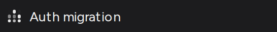
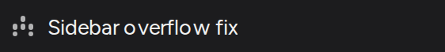
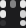
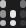
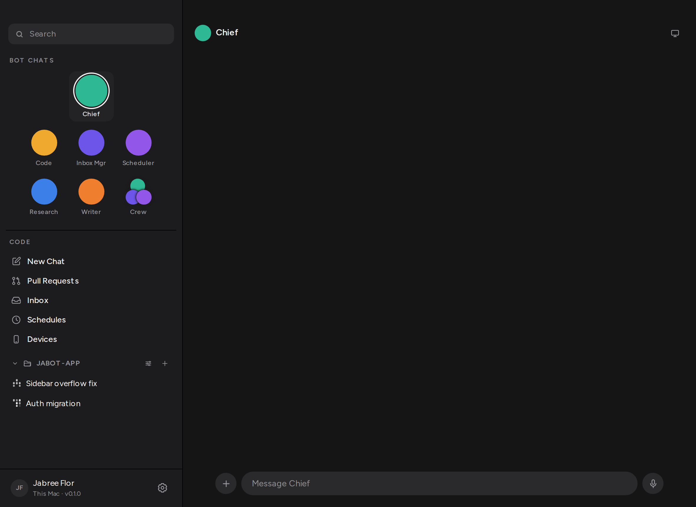

Thread rows used an amber or green dot and a printed word — running, done. Those are now Cursor's activity mark: nine cells in a square, circles lighting up on their own clocks.
A live thread twinkles. Cells fade in and out on prime-ish durations so a frame typically shows a handful of dots, not a full grid pulsing as one. Two live rows do not share a clock — each thread id offsets the loop.
A settled thread sits still on a constellation. Done is the same mark, not moving, so it cannot be read as still working. Failed keeps a danger-coloured still pattern. Idle is a faint centre dot.
The word is gone from the row. It remains the accessible name (Auth migration, running) and the sparkle's tooltip.

Auth migration is held open on the fake ACP agent's hang mode. Sidebar overflow fix has finished. Same folder, two clocks.


The same live mark, a few hundred milliseconds between shots. Different cells are lit in each — that is the animation, not a static icon that happens to look like one.


src/components/Sparkle.tsx — nine cells, live when the tone is running.src/styles/sparkle.css — the clocks and the settled constellations.src/components/FolderList.tsx — pip and label removed; accessible name carries the word.Run ./scripts/verify.sh. Then ./scripts/live.sh up, seed a hanging thread and a finished one, and look at the folder. The live row twinkles. The finished row does not. Neither row prints running or done.
Screenshot evidence is the real App against a live jabot-hostd, Chromium at deviceScaleFactor 2.
